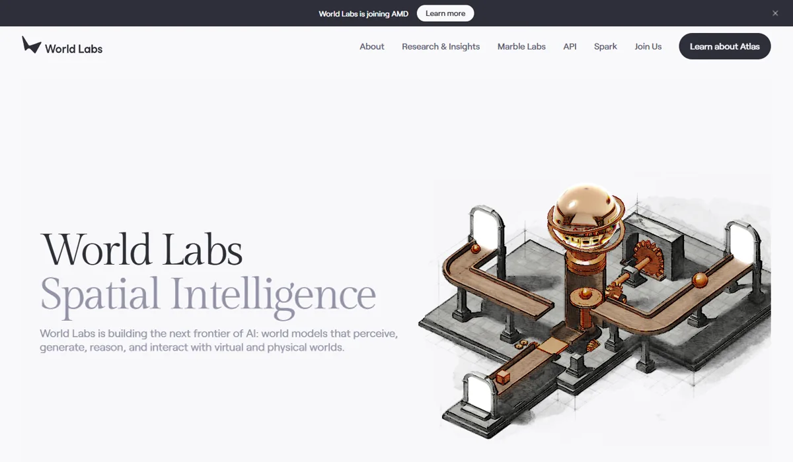
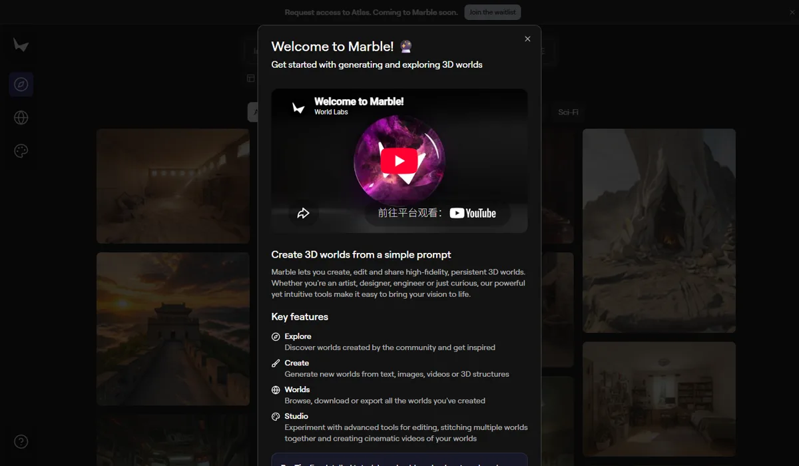

World LabsWorld Labs（即将并入 AMD）
World Labs 是李飞飞创立的“空间智能”公司，不生成单个 3D 物体，而是从文字、图片、视频生成整个可探索、可导出的 3D 世界（产品 Marble）。2026 年 2 月它以约 50 亿美元估值融资 10 亿美元，9 月 AMD 宣布以约 82 亿美元全股票收购。它的故事说明：3D 世界生成的最大买家，可能是需要仿真数据的机器人和芯片公司，而不是内容创作者。
一页结论
- 被芯片公司收购：AMD 于 9 月 28 日宣布以约 82 亿美元全股票收购，李飞飞将出任 AMD 执行副总裁兼首席科学家；AMD 称此举是为了面向机器人和物理 AI 协同设计软硬件S1S5
- 生成整个世界：Marble 可从文字、单图或多图、360° 全景、视频或手工搭建的 3D 结构生成持久的 3D 世界，并支持编辑、扩展、拼接和生成运镜视频S4S6
- 输出面向引擎与仿真：导出 3D 高斯（.spz / .ply）、碰撞网格和高质量贴图网格（GLB），可进入 Blender、Maya、3ds Max；英伟达发布了把 Marble 场景导入 Isaac Sim 做机器人仿真的教程S4S7
- 商业化刚起步：Marble 2025 年 11 月有限测试、2026 年 2 月正式商用，1 月开放 World API；订阅每月 20–95 美元，未披露用户数和收入S2S8
- 质量缺少评测：3D 世界生成尚无公认的独立评测，本报告不对其生成质量下结论
01公司介绍
| 项目 | 内容 |
|---|---|
| 公司 | World Labs，联合创始人兼 CEO 李飞飞（斯坦福大学教授）S1 |
| 官网 | worldlabs.ai；Marble 在 marble.worldlabs.ai |
| 总部 | 美国旧金山S1 |
| 融资 | 2024 年 9 月结束隐身时融资 2.3 亿美元、估值约 10 亿美元；2026 年 2 月融资 10 亿美元，Autodesk 领投 2 亿美元，英伟达、AMD、a16z、思科参投，媒体报道估值约 50 亿美元S2 |
| 收购 | 2026 年 9 月 28 日 AMD 宣布以约 82 亿美元全股票收购，预计 2026 年底完成，需监管批准S1 |
02公司战略
World Labs 的主线是“空间智能”：做能感知、生成、推理并与虚拟和物理世界交互的世界模型。Marble 是第一个产品，长期目标是机器人和物理 AI 的仿真底座。
03定位与竞争
一句话定位：为机器人与仿真团队、游戏和影视创作者、设计与建筑从业者，在需要大规模 3D 场景的场合，提供从文字、图片、视频直接生成可导出、可交互 3D 世界的世界模型。
| 目标用户 | 主要入口 | 依据 |
|---|---|---|
| 机器人与物理 AI | 导出到 Isaac Sim 等仿真平台 | 英伟达发布 Marble + Isaac Sim 教程；AMD 收购的主要理由是物理 AIS5S7 |
| 游戏、影视与 VR 创作者 | Marble 应用 | 导出到 Blender、Maya、3ds Max，提供 VR 链接和运镜视频S4 |
| 设计与 3D 打印 | 高质量网格导出 | 网格可用于 3D 打印、CAD 或进一步建模S4 |
| 开发者 | World API | 按积分调用，草稿与标准两档S3 |
04产品与模型矩阵
| 类别 | 模型 / 产品 | 定位 | 状态（2026-11） |
|---|---|---|---|
| 应用 | Marble | 生成、编辑、分享持久的高保真 3D 世界；Studio 支持编辑、拼接多个世界、生成运镜视频 | 2025 年 11 月有限测试，2026 年 2 月正式商用S2S8 |
| 模型 | marble-1.0 / 1.1、marble-1.0-draft | 标准与草稿两档世界生成 | API 可用S3 |
| 模型 | Atlas | 用少量图片重建 3D 空间 | 2026 年 9 月发布，Marble 候补中S1S8 |
| 开发者 | World API | 世界生成与导出接口 | 2026 年 1 月开放S2S3 |
| 其他 | Spark、Marble Labs | 官网导航中列出的项目 | 见官网S6 |
- 结束隐身融资 2.3 亿美元，估值约 10 亿美元S2
- Marble 有限测试S2
- 英伟达发布 Marble + Isaac Sim 教程用于机器人仿真S7
- 开放 World APIS2
- 融资 10 亿美元；Marble 正式商用Autodesk 领投S2
- 发布 Atlas；AMD 宣布收购约 82 亿美元全股票S1


05生成能力与可控性
Marble 的能力重点在“生成可导出、可编辑的完整场景”；高质量网格导出耗时较长，质量缺少独立评测。
| 能力 | Marble |
|---|---|
| 输入 | 文字、单图或多图（可指定前后左右或自动布局）、360° 全景、100MB 以内视频、手工搭建的 3D 结构S4 |
| 速度 | 全景约 30 秒（多图或视频约 2 分钟）；草稿约 20 秒；完整世界约 5 分钟；高质量网格约 1 小时S4 |
| 编辑 | 修改单个元素或重塑整个世界，扩展与拼接多个世界，全景编辑约 20 秒S4S6 |
| 输出 | 3D 高斯（默认 .spz，可选 .ply）、碰撞网格、高质量贴图网格 GLB、全景、运镜视频S4S11 |
| 集成 | Blender、Maya、3ds Max；网格可用于 3D 打印和 CAD；VR 链接S4 |
| 仿真 | 英伟达教程：高斯 .ply 转 USDZ 导入 Isaac Sim，碰撞网格提供物理，机器人可在场景中正确碰撞与行驶S7 |
第三方评测怎么说
| 评测方 | 时间 | 对比对象 | 结论 |
|---|---|---|---|
| Radiance Fields（报道英伟达教程） | 2025-12-18 | Marble 场景导入 Isaac Sim | 英伟达用 Nova Carter 机器人在 Marble 生成的厨房场景中验证，机器人“遵守碰撞、正确落地、与空间自然互动”；下载自定义场景需要付费订阅S7 |
| Data Center Knowledge（Wylie Wong） | 2026-09-29 | AMD 收购分析 | 分析师认为“这不是 AMD 在买一家模型公司”，而是为理解未来的算力和内存需求；英伟达已凭 Cosmos、Isaac 等在物理 AI 领先S5 |
3D 世界生成尚无公认的独立质量评测，本报告不对 Marble 的生成质量排名。
评测共识：Marble 已能产出可进入仿真和 DCC 软件的场景资产，最有力的“第三方背书”来自英伟达的仿真教程和 AMD 的收购；生成质量本身缺少横向对比数据。
06解决方案与场景
07商业模式与价格
Marble 订阅 + World API 积分；免费版可生成但不能导出，导出和商用权是付费的核心。
| API 任务 | 积分 | 折合美元 |
|---|---|---|
| 标准世界（全景图输入） | 1,500 | $1.20 |
| 标准世界（文字 / 单图） | 1,580 | 约 $1.26 |
| 标准世界（多图 / 视频） | 1,600 | $1.28 |
| 草稿世界 | 150–250 | $0.12–0.20 |
| 高质量网格导出（GLB） | 3,500 | $2.80 |
| 3D 高斯导出（PLY） | 免费 | — |
World Labs 官方 API 价格，1 美元 = 1,250 积分，2026-11-05 访问。来源：S3
| Marble 订阅 | 月费 | 说明 |
|---|---|---|
| Free | $0 | 可生成世界，不能导出 |
| Standard | $20 | 多图与视频输入、编辑、导出 |
| Pro | $35 | 高质量贴图网格（GLB）导出与商用权 |
| Max | $95 | 全部功能 |
免费版不可导出取官方文档，其余档位为媒体与第三方汇总，需以官网为准。来源：S11S12
| 任务 | 组合 | 估算成本 |
|---|---|---|
| 快速看一个场景草稿 | 草稿世界 | 约 $0.12–0.20 |
| 一个可导入引擎的场景 | 标准世界 + 3D 高斯导出 | 约 $1.20–1.28 |
| 一个带高质量网格的场景 | 标准世界 + 高质量网格导出 | 约 $4.00–4.08 |
按 API 积分价换算。来源：S3
08上下游与渠道
09用户、客户与收入
10用户口碑与容错设计
11版权与合规
12近期动态
13潜在风险分析意见
- 收购不确定性：交易需监管批准；并入 AMD 后，面向创作者的 Marble 是否会被弱化尚不清楚
- 与英伟达的竞争：英伟达在物理 AI 生态（Cosmos、Isaac、Omniverse）领先，World Labs 在 AMD 体系内需要追赶
- 质量缺少验证：3D 世界生成缺少公认评测，企业采购难以比较
- 导出成本与速度：高质量网格约 1 小时、2.8 美元一次，不适合大规模批量
- 开源对手：腾讯混元 3D 世界模型 2.0 开源，可免费部署
14综合结论分析意见
关键动作拆解（三问法）
| 动作 | 为什么做（推断） | 效果如何 | 要不要学 |
|---|---|---|---|
| 做“世界”而不是“物体” | 机器人和仿真需要大量完整场景，单个资产不够 | 英伟达发布仿真教程，AMD 收购S1S7 | 借鉴找到最需要你的买家 |
| 输出可导入引擎和仿真平台 | 生成的结果要进入客户已有的工具链 | 支持 Blender、Maya、3ds Max、Isaac SimS4S7 | 高优借鉴 |
| 免费生成、付费导出 | 让用户先体验效果，再为可用的资产付费 | 已实施S11 | 高优借鉴 |
| 接受芯片公司收购 | 世界模型训练与推理极其耗算力，并入芯片公司获得资源 | 交易待完成S1 | 观望 |
优势
- 顶级研究团队
- 可导出、可交互的完整世界
- 产业资本与收购方资源
劣势
- 高质量网格慢且贵
- 缺少质量评测
- 商业化数据不透明
机会
- 机器人与物理 AI 仿真
- 游戏与影视预演
- 数字孪生
威胁
- 英伟达生态
- 开源世界模型
- 收购后的路线变化
对本系列三个问题的回答
- 大厂会不会通吃？ World Labs 最终被大公司（AMD）收购，说明 3D 世界模型的研究投入和算力需求极高，专业公司的一个归宿是并入算力巨头
- 钱从哪里来？ 目前是订阅和 API，但它的真正价值体现在收购价上：买家要的是物理 AI 的能力，而不是内容订阅收入
- 3D 离商用还差什么？ 场景生成已能进入仿真和 DCC 工具链；差的是高质量网格的速度与成本、可比较的质量评测，以及清晰的付费客户群
对 AI 产品团队的启示
高优借鉴
- 三维数字化做场景（门店、展厅、园区）时，可评估 Marble 一类的世界生成：多图或视频输入、导出 3D 高斯与网格
- 免费生成、付费导出：用户先看到价值，再为可用资产付费
- 输出必须进入客户现有工具链（DCC、引擎、仿真平台）
观望
- AMD 收购完成后 Marble 的产品路线
- Atlas 少图重建在数字孪生中的效果
不建议
- 把 3D 高斯直接当作可编辑网格交付：需要高质量网格导出（约 1 小时）或额外处理
- 在收购路线明确前把核心业务深度绑定在 Marble 上
信息缺口
以下信息未找到可靠的公开来源，本报告不做推测。
- Marble 用户数、收入与付费客户
- Marble 订阅各档的官方价格与额度（部分为第三方汇总）
- 3D 世界生成质量的独立评测
- AMD 收购完成后的产品路线
- Atlas 的开放时间与价格
来源
A 官方 · B 权威媒体或第三方 · C 社区（仅用于口碑与线索）。访问日期均为 2026-11-05。
- S1 · BAMD to acquire World Labs in $8.2B all-stock deal（含 Atlas、李飞飞任职）Let's Data Science / CRN Asia 等（援引 AMD 公告与 CNBC） · 2026-09-28
- S2 · BAI Firm World Labs Raises $1 Billion At $5 Billion ValuationCrowdfund Insider（援引彭博） · 2026-02
- S3 · AAPI PricingWorld Labs 文档 · 2026-11-05 访问
- S4 · AMarble 文档（输入、输出、生成时间）World Labs 文档 · 2026-11-05 访问
- S5 · BAMD to Acquire World Labs for $8.2B to Advance AI Models and RoboticsData Center Knowledge（Wylie Wong） · 2026-09-29
- S6 · AWorld Labs 官网首页World Labs · 2026-11-05 访问
- S7 · BNVIDIA Publishes Blog on Marble Workflow for Robotics Simulation with Isaac SimRadiance Fields · 2025-12-18
- S8 · AMarble 应用欢迎页World Labs · 2026-11-05 访问
- S9 · AProject Genie: Experimenting with infinite, interactive worldsGoogle 官方博客 · 2026-01
- S10 · B腾讯发布并开源混元 3D 世界模型 2.0广州日报（东方财富转载） · 2026-04-16
- S11 · AGaussian Splat 导出文档World Labs 文档 · 2026-11-05 访问
- S12 · CMarble AI Pricing, Access & Subscription PlansSkywork 博客（第三方汇总） · 2026